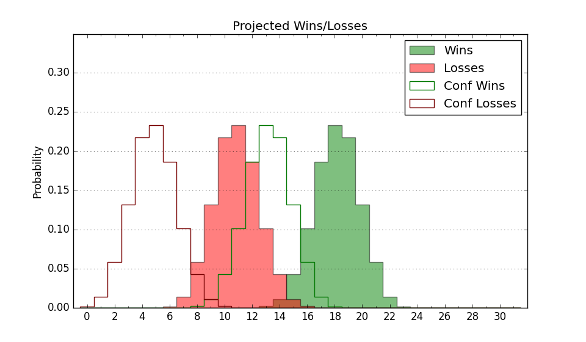

| Home | Game Probabilities | Conferences | Preseason Predictions | Odds Charts | NCAA Tournament |
| City: | Charlotte, North Carolina | |
| Conference: | Atlantic Sun (1st)
| |
| Record: | 5-0 (Conf) 10-6 (Overall) | |
| Ratings: | Comp.: -2.0 (180th) Net: -1.0 (172nd) Off: 105.9 (170th) Def: 106.9 (200th) SoR: 0.7 (108th) |
| Remaining | ||||||
|---|---|---|---|---|---|---|
| Date | Opponent | Win Prob | Pred. | |||
| 1/18 | @ Florida Gulf Coast (158) | 29.3% | L 72-78 | |||
| 1/23 | North Florida (242) | 75.1% | W 90-82 | |||
| 1/25 | Jacksonville (171) | 63.3% | W 75-71 | |||
| 1/29 | North Alabama (144) | 55.8% | W 77-76 | |||
| 2/1 | West Georgia (340) | 89.9% | W 83-67 | |||
| 2/5 | @ Central Arkansas (345) | 74.1% | W 79-71 | |||
| 2/8 | Lipscomb (84) | 34.8% | L 71-76 | |||
| 2/13 | @ Bellarmine (356) | 83.1% | W 84-73 | |||
| 2/15 | @ Eastern Kentucky (197) | 38.8% | L 79-82 | |||
| 2/18 | Central Arkansas (345) | 90.7% | W 83-66 | |||
| 2/20 | Austin Peay (292) | 83.4% | W 76-65 | |||
| 2/24 | @ West Georgia (340) | 72.3% | W 79-72 | |||
| 2/26 | @ North Alabama (144) | 27.0% | L 73-80 | |||
| Previous | Game Score | |||||
| Date | Opponent | Win Prob | Result | Off | Def | Net |
| 11/8 | Western Carolina (337) | 89.7% | W 67-54 | -27.0 | 19.5 | -7.4 |
| 11/12 | @Utah (71) | 10.4% | L 65-96 | -10.9 | -2.3 | -13.3 |
| 11/13 | @BYU (39) | 5.7% | L 55-99 | -22.1 | -7.7 | -29.8 |
| 11/19 | @Appalachian St. (135) | 25.1% | L 53-65 | -19.2 | 7.7 | -11.5 |
| 11/23 | (N) USC Upstate (335) | 82.1% | W 98-74 | 14.5 | 2.2 | 16.8 |
| 11/24 | @East Tennessee St. (139) | 26.5% | L 67-82 | -5.6 | -6.4 | -12.0 |
| 12/3 | Winthrop (188) | 66.2% | L 78-86 | -7.4 | -2.4 | -9.8 |
| 12/7 | @VMI (310) | 64.2% | W 81-78 | 9.7 | -16.1 | -6.4 |
| 12/14 | @Gardner Webb (231) | 45.5% | W 85-83 | 23.2 | -11.3 | 12.0 |
| 12/18 | Mercer (240) | 74.8% | W 73-66 | -15.8 | 16.2 | 0.4 |
| 12/21 | @Mississippi (22) | 3.7% | L 62-80 | 0.3 | 9.2 | 9.5 |
| 1/2 | Stetson (349) | 92.0% | W 96-87 | 7.3 | -17.9 | -10.6 |
| 1/4 | Florida Gulf Coast (158) | 58.5% | W 92-83 | 25.9 | -14.6 | 11.3 |
| 1/9 | @Lipscomb (84) | 13.6% | W 75-73 | 23.2 | 1.5 | 24.7 |
| 1/11 | @Austin Peay (292) | 59.6% | W 67-60 | -5.6 | 12.0 | 6.3 |
| 1/16 | @Stetson (349) | 77.2% | W 95-60 | 17.8 | 20.7 | 38.5 |
| Stats & Trends | |||||
|---|---|---|---|---|---|
| Current | Day | Week | Month | Season | |
| Composite | -2.0 | +0.0 | +3.2 | +7.7 | +8.0 |
| Comp Rank | 180 | -- | +37 | +89 | +89 |
| Net Efficiency | -1.0 | +0.0 | +3.3 | +8.5 | -- |
| Net Rank | 172 | +1 | +37 | +98 | -- |
| Off Efficiency | 105.9 | +0.0 | +1.2 | +5.5 | -- |
| Off Rank | 170 | -- | +11 | +78 | -- |
| Def Efficiency | 106.9 | -0.0 | +2.1 | +3.0 | -- |
| Def Rank | 200 | -- | +45 | +64 | -- |
| SoS Rank | 205 | -1 | -36 | -34 | -- |
| Exp. Wins | 18.1 | -0.0 | +1.6 | +5.1 | +5.7 |
| Exp. Conf Wins | 13.1 | -0.0 | +1.6 | +4.8 | +4.4 |
| Conf Champ Prob | 22.3 | -1.0 | +11.0 | +20.9 | +16.9 |

| Advanced Stats | ||
|---|---|---|
| Stat | Value | Rank |
| Off Eff FG % | 0.519 | 135 |
| Off Ast Ratio | 0.162 | 86 |
| Off ORB% | 0.314 | 115 |
| Off TO Rate | 0.171 | 308 |
| Off FT Ratio | 0.327 | 197 |
| Def Eff FG % | 0.527 | 248 |
| Def Ast Ratio | 0.140 | 128 |
| Def ORB% | 0.285 | 183 |
| Def TO Rate | 0.141 | 232 |
| Def FT Ratio | 0.323 | 160 |